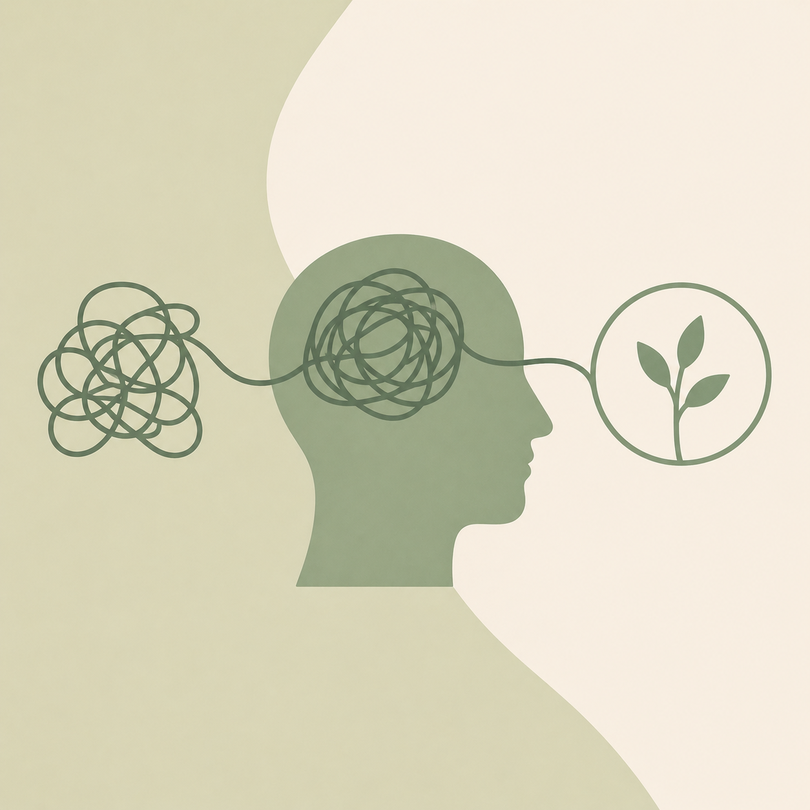

Conheça todas as abordagens psicológicas que oferecemos para sua transformação

Especialista: Dra. Marina Silva (CRP: 06/12345)
A TCC é uma abordagem focada na identificação e modificação de padrões de pensamento e comportamento disfuncionais. Com mais de 12 anos de experiência, a Dra. Marina Silva auxilia os pacientes a desenvolverem habilidades práticas para lidar com desafios emocionais, promovendo mudanças duradouras e maior bem-estar psicológico.
Atendimento especializado para casais, focado na melhoria da comunicação, resolução de conflitos e reconstrução do vínculo afetivo utilizando as técnicas da TCC.
Especialista: Carlos Eduardo Ribeiro (CRP: 06/23456)
Por meio da escuta do inconsciente, a psicanálise oferece um espaço de autoconhecimento profundo. Carlos Eduardo, com 10 anos de atuação, convida o paciente a explorar conflitos internos e a ressignificar sua história, promovendo transformação pessoal a partir da compreensão das raízes emocionais.
Especialista: Juliana Costa (CRP: 06/34567)
Com foco no momento presente, a Gestalt-Terapia amplia a consciência sobre si mesmo e sobre os próprios padrões de relacionamento. Juliana Costa facilita, com 8 anos de prática, a integração de experiências e emoções, promovendo autorregulação e uma vida mais autêntica.
Atendimento voltado para o núcleo familiar, facilitando a dinâmica das relações, integrando vivências e ajustando o equilíbrio do sistema familiar como um todo.
Especialista: Dr. Felipe Almeida (CRP: 06/45678)
Baseada nos conceitos de Carl Jung, esta abordagem trabalha com símbolos, sonhos e o processo de individuação. O Dr. Felipe Almeida conduz a terapia de forma a integrar aspectos conscientes e inconscientes, favorecendo o equilíbrio psíquico e o desenvolvimento do potencial humano.
Especialista: Beatriz Ferreira (CRP: 06/56789)
Essa abordagem busca compreender a experiência única de cada pessoa, explorando questões como sentido da vida, liberdade e responsabilidade. Beatriz Ferreira oferece um espaço de acolhimento onde o paciente pode construir uma existência mais autêntica e significativa.
Espaço seguro e acolhedor para que o jovem lide com as crises, identidades e desafios existenciais típicos dessa fase de transição de forma livre e responsável.
Especialista: Leonardo Santos (CRP: 06/67890)
A Abordagem Centrada na Pessoa oferece um ambiente de aceitação incondicional e empatia genuína. Leonardo Santos acredita no potencial inato de crescimento de cada indivíduo, facilitando um processo terapêutico que valoriza a autenticidade e o desenvolvimento pessoal.
Atendimento lúdico voltado às crianças, com foco no acolhimento de suas emoções, estimulando sua autoconfiança, crescimento e desenvolvimento saudável.
Escolha a abordagem e o profissional que melhor se adequam às suas necessidades e agende sua sessão hoje mesmo
Conhecer Profissionais